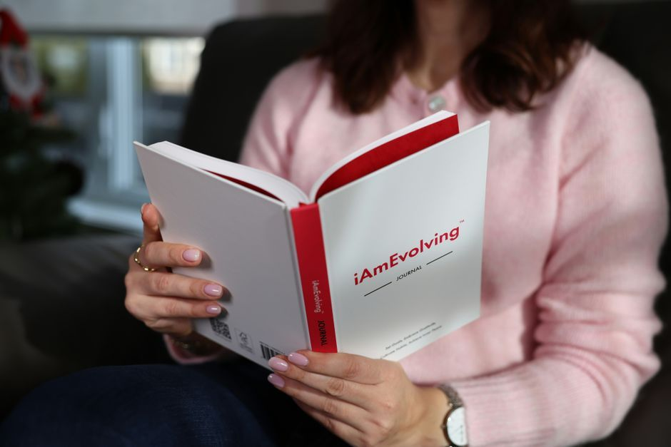

Self and Identity
Why Do I Not Feel Like Myself Anymore?
Not feeling like yourself is usually not a lost identity. It is a narrowed one. Long stretches of stress, caretaking, grief or illness push the nervous system into a protective mode that prioritises function over expression, and personality is expensive. What feels gone is more often covered, and it tends to return as safety does.
Why do I feel like a different person than I used to be?
Because survival is a narrowing.
When the body has been braced for a long time, it makes a reasonable trade. Curiosity, humour, spontaneity, creativity, desire: these are what a system spends energy on when it is not managing threat. Under sustained pressure they are quietly cut first. You keep working. You keep showing up. You answer the messages. And somewhere in there the part of you that had opinions about music goes quiet.
That is not a character flaw and it is not laziness. It is triage. But it is possible to live in triage so long that you forget it was ever temporary, and then conclude that the flattened version is simply who you have become.
What makes someone stop recognising themselves?
Rarely one thing. Usually an accumulation.
- Survival patterns. The behaviours you built to get through an unpredictable stretch, kept long after the stretch ended.
- Inherited scripts. The unspoken family rules you absorbed about what you are allowed to want, need or say out loud.
- Roles. Parent, carer, the reliable one, the one who holds it together. A role that fits too well can grow over a person.
- Grief and loss. Including the losses nobody marked.
- Old interpretations. The meanings you assigned to things at an age when you did not yet have the equipment to weigh them.
I have written about the family rules in the survival scripts we inherit and about carrying other people's feelings in why you feel responsible for everyone else's emotions. Both are common routes to this particular kind of disappearing.
Is this depression, or burnout, or something else?
It can be any of them, and that distinction is not mine to make.
Please do not read a blog post and decide. Persistent low mood, loss of interest in what you used to enjoy, changes in sleep or appetite, hopelessness, or feeling detached from yourself and your surroundings all deserve a proper assessment. Speak with your physician or a licensed mental health professional, and do that urgently if you have thoughts of harming yourself. There are physical contributors worth ruling out too, including thyroid function, iron, vitamin D, B12, blood glucose and medication effects. The National Institute of Mental Health's guide to depression describes what to look for.
That assessment is not an alternative to this conversation. It is what makes the rest of it safe.
Is the person I used to be still in there?
Yes, and I would say that carefully rather than sentimentally.
What I see in practice is that people do not lose themselves so much as cover themselves. Three things are usually still intact. Your strength, not the rigid strength of someone enduring but something more flexible. Your softness, the tenderness that survived a period that asked you to harden. And your brilliance, the light that dimmed but never went out.
You notice the return in the body first. A softening in the chest. A breath that goes lower without being told to. Shoulders that come down in the middle of an ordinary Tuesday. The nervous system recognises truth before the mind has finished arguing about it. This is the idea my book Nothing Missing, Nothing Broken is built on: shalom means nothing missing and nothing broken, which is a claim about what is still there, not a promise about what will be added.
How do you start to feel like yourself again?
Slowly, and from the body upward.
Stabilise the body first, soften the soul next, let the spirit lead last. That order is not decorative. A nervous system that still reads the room as dangerous cannot sustain an insight, however true the insight is. So the work starts with sleep, food, breath and a sense of safety, long before it gets to questions about purpose.
Then smaller things than you expect. Answer one question honestly today rather than diplomatically. Notice one preference and act on it, even if it is only which route you walk. Let yourself be bored without filling it. Preference is where personality lives, and it comes back in very small pieces.
And notice what is already returning. A glimmer, as I have described in training yourself to notice safety again, is a small signal of ease that your system can learn to register. Most people are further along than they can feel.
Pause for reflection
Rest both hands in your lap. Let the breath settle without managing it.

Then ask gently: what did I used to love that I have not thought about in years? And what would it cost me, honestly, to want something again?
"You are not lost. You are returning." The person who has been there all along is coming back into view.
If this season has gone on long enough that you would rather not navigate it alone, support for emotional overwhelm and the nervous system is the work I do with people standing exactly here.
FAQ
Is it normal to feel like you have lost your personality?
It is far more common than people say out loud, especially after a long stretch of stress, caregiving, grief or illness. It is still worth discussing with your doctor, because persistent flatness or detachment can have medical and mental health causes that deserve assessment.
How long does it take to feel like yourself again?
There is no schedule, and anyone offering one is guessing. It returns in fragments rather than all at once, usually noticed in the body before the mind.
Can burnout change your personality permanently?
Sustained exhaustion narrows what a person expresses, and that narrowing usually eases as real recovery happens. If it does not, that is a reason to be assessed rather than a verdict about who you now are.
Where should I start?
Start with one honest preference today, and with sleep. If you would like company in the work of coming back to yourself, you can start a conversation through the contact page.
This article is for educational purposes and is not medical advice. It is not intended to diagnose, treat, cure, or prevent any disease. Please work with a qualified practitioner, and consult your physician before making changes to your health routine.
In Renewal,
Lynette Wing
Founder of Renewal Health
Clinical Homeopath, Naturopath, Mind-Body Practitioner
Dedicated to root-cause healing and whole-person alignment. Guiding clients to emerge, align, and live fully, restoring vitality, clarity, and sustainable wellness. About Lynette